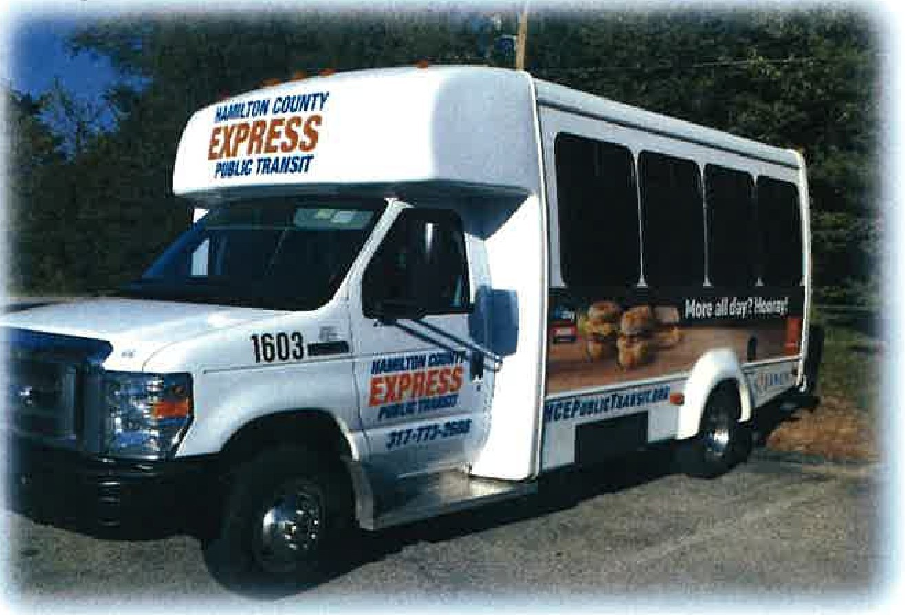

HCE Riders Guide
Table of Contents
- Understanding the Hamilton County Express Transportation Service
- Setting Up an HCE Rider Account
- Paying for Trips on HCE
- Scheduling Rides
- Getting Ride Notifications
- Riding on Hamilton County Express
- Mobility-Accessible Transit Services
- Hamilton County Express Policies and Disclosures
- Policy: Accessibility
- Policy: Bicycles
- Policy: Carry-On Packages
- Policy: Car Seats for Infants and Children under Four
- Policy: City-Wide Emergencies
- Policy: Food and Drink
- Policy: Language Line
- Policy: Late Cancellations and No-Shows
- Policy: Lost and Found
- Policy: On-Board Vehicle Prohibitions
- Policy: Personal Care Attendant
- Policy: Portable Oxygen Supply Units
- Policy: Reasonable Accommodation
- Policy: Rider Conduct
- Policy: Service Animals
- Policy: Subscription Trips
- Policy: Suspension Appeals
- Rider Reminders about HCE Policies
- Disclosure: Audio/Video Recording
- Disclosure: Notice to the public of rights under Title VI
- Disclosure: Transportation Advisory Committee
- Disclosure: Alternative Formats for Riders Guide
- Disclosure: Customer Feedback

Public Transportation for Hamilton County, Indiana

Contact:
- Trip Scheduling and New Rider Setup: (8AM - 4PM, M-F) +1 (317) 773-2688
- Dispatch: (6AM-6PM, M-F): +1 (317) 776-3226
- TTY: +1 (800) 743-3333
1555 Westfield Road Noblesville, Indiana 46062
+1 (317) 773-8781
Hamilton County Express provides regional public transportation for all communities in Hamilton County, Indiana and is operated by Janus Developmental Services, located at 1555 Westfield Road in Noblesville, Indiana. All members of the public are eligible for transportation support for any purpose within Hamilton County during the days and hours of HCE operation.
Understanding the Hamilton County Express Transportation Service
Hamilton County Express is an on-demand, curb-to-curb, mobility-accessible transportation service for Hamilton County Indiana. Hamilton County Express transportation service has the following characteristics:
- Affordable: HCE is subsidized by Hamilton County and the state of Indiana, allowing each trip to be priced at $3.00, regardless of distance. See Paying for Trips on HCE for more information about payment methods on HCE. Three dollars is generally less than the cost of a gallon of gas and provides a great value for our customers. To keep the service affordable, riders are encouraged to cancel unneeded rides more than two hours before the ride is scheduled rather than to no show, after HCE has already taken the time and expense to go to you and pick you up. See our Policy on late cancellations and no-shows.
- Curb-to-curb: Unlike fixed-route bus services (such as IndyGo in Indianapolis) that have designated stops where you must catch the bus, Hamilton County Express provides curb-to-curb transportation within Hamilton County. So HCE can pick you up in front of your home and take you directly to work, to a medical appointment, to school, to the grocery store, and so on.
- Mobility-accessible: Hamilton County Express provides extensive support for mobility-limited, special needs, and non-ambulatory riders within our area of operation, including support for wheelchairs, walkers, scooters, as well as lifts to help mobility-challenged passengers board the bus. See Mobility-Accessible Transit Services for more information on mobility operations and constraints. See also, our Reasonable Accomodation policy.
- On-demand: HCE is an on-demand service, meaning that you have to select the schedule you need. You must submit a request for each ride to come to your pick-up location and transport you to your destination. See Scheduling Rides for more information about requesting rides.
- Open to all: HCE is available to everyone needing to travel within Hamilton County, Indiana, as well as riders connecting to Hamilton county from Marion, Madison, and Boone counties. See Hamilton County Express Service Area for more information about connection to points to Marion, Madison, and Boone county bus services.
- Shared-ride: HCE is a shared-ride public transportation service. Shared-ride services differ from exclusive-ride services, such as limousine services, in particular ways. You may, and likely will, share rides with other passengers. Your route may include detours from the shortest distance to fulfill your ride to pick and drop off other passengers. Other passengers may be picked up and dropped off during your ride. Shared-ride services operate with 30-minute pickup and dropoff windows rather than exact schedules. See Understanding Pickup Windows for more information about 30-minute pickup windows.
You may wonder how HCE can be both an on-demand and shared-ride service. The answer is that individual ride times are adjusted to fit with other ride requests, so your trip may be longer than it would be on an exclusive ride service. The service also creates pickup times in 30-minute windows that allow for changes to buses and itineraries to keep trips on time.
The routes are created by Spare Engine, an advanced routing software, and routes are updated every minute with the goal to fulfill the transportation needs of as many passengers as possible while keeping trips on time. Since implementing Spare Engine, 93-95 percent of HCE rides have been on time.
Hours of Operation and Holidays
Hamilton County Express operates on the following schedule:
- Monday through Friday from 6:00 AM to 6:00 PM, EDT
- Saturday from 7:00 AM to 3:00 PM, EDT
- Sunday no operation
- Holidays with no operation: HCE is always closed on the following holidays: New Years Day (January 1), Independence Day (July 4), Memorial Day (variable), Labor Day (variable), Thanksgiving (variable), and Christmas Day (December 25). These holidays are sometimes
Holiday Schedule for 2026:
| Holiday | Day | Date | Service Level |
|---|---|---|---|
| New Years | Thursday | 1/1/2026 | No Service |
| New Years | Friday | 1/2/2026 | No Service |
| New Years | Saturday | 1/3/2026 | No Service |
| Memorial Day | Monday | 5/25/2026 | No Service |
| Independence Day | Friday | 7/3/2026 | No Service |
| Independence Day | Saturday | 7/4/2026 | No Service |
| Labor Day | Monday | 9/7/2026 | No Service |
| Thanksgiving | Thursday | 11/26/2026 | No Service |
| Thanksgiving | Friday | 11/27/2026 | No Service |
| Thanksgiving | Saturday | 11/28/2026 | No Service |
| Christmas | Friday | 12/25/2026 | No Service |
| Christmas | Saturday | 12/26/2026 | No Service |
Hamilton County Express Service Area
Hamilton County is generally square and is bounded by North 1200 East as the western boundary, 296th Street as the northern boundary, North 300 W (Atlantic Road/State Road 13) as the eastern boundary, and 96th street as the southern boundary. Cities and towns within Hamilton County, Indiana include, but are not limited to:
- Noblesville
- Carmel
- Fishers
- Westfield
- Sheridan
- Cicero
- Arcadia
- Atlanta

Figure 1: The Hamilton County Express service area.
Currently HCE provides service connections to the following surrounding counties:
- Marion County - lndyGo +1 (317) 635-3344 (IndyGo web site). HCE provides service connections to and from the following lndyGo bus stops in Indianapolis:
- St. Vincent Indianapolis Hospital (bus shelter on Harcourt Road)
- Keystone at the Crossing Mall (in front of Starbucks/Cheesecake Factory)
- Nora Plaza (bus shelter on westbound 86th at the Monon Trail)
- Castleton Square (bus shelter in parking lot, south side of JC Penney)
- Community Hospital North (Hospital main entrance, Medical Offices Building - 7250, and IndyGo shelter on Clearvista Dr.)
- Boone County - Boone Area Transit Service (BATS) (BATS web site). +1 (765) 482-5220. HCE provides service
connections to and from the following (BATS) connecting locations in Zionsville:
- Montgomery Aviation 11329 East State Road 32, Zionsville, IN 46077
- Zionsville Presbyterian Church 4775 West 116th Street, Zionsville, IN 46077
- Madison Co. - Transportation for Rural Areas of Madison Co. (TRAM) (TRAM web site). +1 (885) 743-3843. HCE provides service connections to and from the following (TRAM) connecting location in Pendleton:
- Loves Travel Stop 9000 lnterpark Dr., Pendleton, IN 46064
Setting Up an HCE Rider Account
Before you can schedule rides on the Hamilton County Express (HCE) service, you have to call in to the reservations line — +1 (317) 773-2688 — to get set up on the HCE system. The following information is required to set up an account, so be prepared to provide it:
- Rider Name: First and last names.
- Phone Number: Ideally, the phone number you give will be capable of receiving text messages, so mobile phones are better than land-line phones. The phone number is used as a credential to identify each rider, so it’s best if the phone number is unique to the rider, although e-mail addresses can also be used as the credential for riders who share a phone number with other riders. Land-line phones can also be used as a credential, but then the rider will receive automated phone calls informing them of scheduled rides. See Getting Ride Notifications for more information about ride notifications.
- Preferred Language: HCE can provide text notifications about rides and schedules in the following languages:
- English
- Spanish
- Portuguese
- German
- French
- Japanese
HCE provides telephone translation services upon request for most languages, including Spanish, French, and Arabic, upon request.
- Date of birth: We need this for demographic information.
- Gender: It’s not necessary to disclose this.
- Mobility/Special Needs information: Please be prepared to list all information regarding mobility and/or special needs, including use of mobility-assistance equipment, whether a lift is necessary for boarding, and any information regarding seizure risk, vision impairment, and so on. See Mobility-Accessible Transit Services for more information about HCE’s reasonable accommodation for special needs.
- Other riders normally accompanying you: Be prepared to provide information about children under 11 who will regularly accompany you (see our Car Seat Policy for important information regarding car seats for infants and children under age four). Riders with special needs can designate a Personal Care Attendant to provide assistance during rides on HCE at no cost.
- How you intend to pay: Generally, this will be cash or eWallet. See Paying for Trips on HCE for more information about payment options.
- Home address: Having a home address outside of Hamilton County does not exclude anyone as a rider for HCE, but we cannot pick up at residences or businesses outside of Hamilton County, except for approved county connection points (see Hamilton County Express Service Area for more information about connection points). Be prepared to provide information about where and how you want to be picked up, keeping in mind that buses are generally prohibited from entering rider driveways except as a reasonable accommodation.
After you call in to set up your rider account, you can use your phone number or other credential to access your schedule information via the HCE rides app. See X-REF for more information about the HCE Rides mobile app.
Your eWallet is automatically created when your rider account is created. You can add it at any time by giving money to the driver.
Paying for Trips on HCE
The HCE service costs $3.00 per one-way trip, regardless of distance, anywhere within the HCE service area, with the following exceptions:
- There is no fare for children aged under 11 when accompanied by an adult. See our Car Seat Policy for important information concerning infants and children under the age of 4.
- There is no fare for personal care attendants (PCAs) to ride on a trip explicitly to provide care for a rider. A parent cannot be the PCA for child under age 11, who rides free with an adult — at least one fare must be charged per trip. See Mobility-Accessible Transit Services for more information about PCAs.
Payment Methods
There are three ways to pay for HCE rides for most riders — cash, check, or money order. Rides can be paid on a per-ride basis, or money can be applied to the rider’s eWallet (electronic wallet), which is automatically created for each rider when their HCE account is created.
Riders can give cash, personal check, or money order directly to the driver or to the office at 1555 Westfield Road in Noblesville, Indiana. Drivers will radio dispatch to add the amount to the rider’s eWallet. The maximum that an eWallet can hold is $150, so best practice is to generally add amounts between $30 and $120.
Make checks and money orders payable to Hamilton County Express.
We recommend personal check as the best way to provide money to a rider eWallet, because it provides a receipt and allows for quick resolution should a deposit fail to be credited to a rider’s eWallet.
Unfortunately, HCE does not support credit or debit card transactions at this time, because doing so would require us to raise fares.
Unusual payment methods: Call dispatch and ask for a manager if a rider intends to ride on a waiver (such as Medicare, OPG, or Easter Seals, for example). Generally, to ride on a waiver, the first point of contact is your case manager at the waiver-providing institution, who can help with the necessary paperwork.
eWallet Transactions
Your eWallet is charged $3.00 every time you make a ride request, either via the HCE Rides app or by calling in to the Reservations line, so you are charged in advance of the actual trip. If the trip is canceled, you are automatically refunded the charge within one hour. Charges are finally resolved after the bus ride as “successfully charged,” meaning that the money can no longer be refunded. Prior to the trip, the charges are classified as “pending charges,” but please note that pending charges do count against your eWallet balance.
HCE’s current policy is to provide $30 (1 week for a rider taking two rides Monday through Friday) in leeway to each rider’s wallet balance, making the minimum wallet balance -$30.00. After reaching -$30.00, you will no longer be able to schedule rides until the balance is positive again. The policy is meant to provide availability of rides in times of unusual need rather than to function as a consistent credit system. This policy is subject to change without prior notice.
The best practice is to pay weekly or bi-weekly for rides by personal check or cash in advance; for many riders, this amounts to six rides, or $30 per week. The maximum that an eWallet account can hold at one time is $150.
Scheduling Rides
Hamilton County Express is an on-demand transit service. On-demand means that rather than going to a bus stop at a fixed time to catch the bus, you must schedule each leg of your trip, as well as provide a schedule for your trips. Because HCE is also a shared ride service, it’s important that you should understand an important distinction — Arrive By versus Leave At.
Here is an explanation of the Arrive By versus Leave At distinction:
- Arrive By: This is the latest time that the bus can drop you off. So, if you need to be work at by 9:00 AM, you should schedule the trip as Arrive By, say, 8:55 AM. Arrive By constraints your drop-off time. The bus is not on time if it drops you after 8:55 AM. This is the leaving home schedule. You don’t want the bus to drop you off after your shift begins or your appointment time starts.
- Leave At: This is the earliest time that the bus can pick you up. So, if you are finished with work at 4:00 PM, then you should schedule the trip as Leave At, say, 4:05 PM. Leave At constrains your pick-up time. The bus is not on time if it arrives to pick you up before 4:05 PM. This is the returning home schedule. You don’t want the bus to pick you up before your shift or appointment is complete.
Here’s where you could go wrong: You know that it takes about 20 minutes to go from your house to work, and you want to be at work at 9:00, so you schedule the bus to Leave At 8:40 AM. If you schedule the ride as Leave At 8:40 AM, however, you have absolutely no guarantee that you will get to work by 9:00 AM. In fact, there is no guarantee that the bus will even pick you up before 9:00 AM. All you’ve told the software is not to pick you up before 8:40 AM, so your pickup window would be 8:40 AM to 9:10 AM.
In the above scenario, the correct way to create the ride to work, assuming you want to arrive five minutes early, would be to set up the trip to Arrive By: 8:55 AM. That means that the bus can drop you no later than 8:55 AM. The Spare Engine will determine your pickup window, which may be earlier than you prefer, but you will get there by 8:55 AM.
Currently, trips can be scheduled up to one week in advance. There are two ways to schedule rides:
- By using the HCE Rides app. The HCE Rides app is available 24/7. The app will not allow you to schedule a ride for which a driver cannot be immediately matched. It will instead offer the closest available time. See Scheduling Trips Using the HCE Rides App for more information on using the HCE Rides app for scheduling.
- By calling the Reservations line at +1 (317) 773-2688 between the hours of 8:00 AM and 4:00 PM Monday through Friday. The Customer Service representatives can schedule rides for you. If there is no availability for your trip, the Customer Service representative may offer to create an unmatched request, which leaves your request in the system in an unmatched state, but allows you to get the ride if resources change or if other riders cancel. You will receive a notification if and when the unmatched ride is matched to a rider.
- For hearing and speech impaired individuals: Call the following number to access support for a text telephone device — +1 (800) 743-3333.
- Translation support is available on demand by requesting translation and the language to translate at any HCE number.
Trips must be scheduled a minimum of 2 hours prior to the trip departure time, but this may be changed to 24 hours prior during periods of low driver availability. Messages will be sent out to all riders before changing the minimum scheduling window. For appointments that end earlier than expected, such as some doctor’s appointments, Dispatch can attempt to get you an earlier return ride — +1 (317) 776-3266.
All rides are scheduled based on availability. Lack of availability due to high demand may require you to negotiate your pick-up and drop-off times and could result in your trip request being denied.
Scheduling Trips Using the HCE Rides App
You can schedule trips yourself using the HCE Rides app without having to call Hamilton County Express reservations. Rides must be scheduled at least two hours prior to pickup. Follow these steps: 1. Open the HCE Rides App. The home screen opens with your current location, as shown in Figure 2.

Figure 2: The Where To screen asks for your destination.
2. Type your destination into the Where To search box.
Remember to enter your destination, rather than your starting point. If your destination is a business or other named place (such as a bank, post office, or the BMV) enter the name of the place rather than the address, and then choose the address from the list of options. In the example above, I chose Meijer as my destination and then selected the Noblesville Meijer from the list of nearby Meijer locations, as shown in Figure 3.
If you are going to a residence, then enter the address.

Figure 3: Enter the name of place you want to go, if possible.
After you choose your destination, the Set Pickup location appears, as shown in Figure 4.

Figure 4: Your current location is the default pickup location.
3. If the default pickup location is correct, then click the Set As Pickup button.
Otherwise, enter the correct pickup location and then click the Set As Pickup button. The Choose a Ride Option screen appears, as shown in Figure 5.

Figure 5: Before you Select Hamilton County Express, review your choices.
Don't click the Select Hamilton County Express button yet!
4. Click and review the four buttons above the Select Hamilton County Express button. They are:
- Number of riders: Clicking on the top-left button allows you to add additional riders to a single trip, such as a spouse, child, or friend. Click Confirm Riders to confirm your choices.
- Accessibility options: Clicking on the top-right button allows you to ensure that all accessibility needs for the ride are accounted for. Click Confirm Accessibility to confirm your selections. Check out Changing Accessiblity Options in the HCE Rides App for more information.
- Booking Time: Clicking on the bottom-left button allows you to change the date and time for your ride. If you are going to an appointment, then you should choose the Arrive By button before selecting a time, as shown in Figure 6. See Scheduling Rides above to understand the difference between Leave At and Arrive By. Click Confirm Booking Time to lock it in.
- Payment Method: Clicking the bottom-left button allows you to choose between the cash and eWallet options. The balance on your eWallet is shown next to the Wallet (Reloadable) option, as shown in Figure 7. Click Confirm Payment Method to continue. Note that your eWallet will be charged when you complete the reservation. See Paying for Trips on HCE for more information.

Figure 6: Choosing the date and time to arrive by.

Figure 7: The eWallet option shows your balance before you book a trip.
If you choose Cash, then be sure to give the driver cash when you board the bus. Change will be added to your eWallet.
5. After you confirm the four buttons, click Select Hamilton County Express Service.
The Confirm Trip Details screen appears, as shown in Figure 8.

Figure 8: Confirm your ride.
6. Click the Schedule Ride button.
You will see a confirmation of your ride, as shown in Figure 9.

Figure 9: If you don't see "Ride with Driver," then the ride is in Unmatched status.
The HCE Rides app won't allow you to create an unmatched request (, but the trip may become unmatched due to a service disruption See Understanding Unmatched Requests for more information about trips in Unmatched status.
7. Click the Book Return button and select the time your shift or appointment ends to quickly create a return trip, if you need one. The return will default to Leave At, which is generally correct.
That's it. Because you have a trip scheduled, the calendar on the home screen now has a red alert on it. You can review your trips there, create the same trip on a different day, or cancel any trip.
Moving the pin in the HCE Rides app
You can move the pin for your pickup location, if necessary, but you should try not to. Moving the pin causes the name of a business to become absent from the address, or it could cause a different address to be displayed to the driver. Here are some reasons in which it might be necessary to move the pin:
- Large building with many entrances: If your pickup location is at a particular door of a hospital, for example, moving the pin to that door will help.
- New Development: If your residence is in a new development, and you notice that the pin is at the back of your home, for example, then moving it to the correct side of the house would be helpful.
- Google Maps error: If the pin points to the wrong building, then move it to the correct location.
There are also some good reasons not to move the pin, as follows:
- Moving the pin can cause the name of the business to disaappear from the driver manifest, which can cause the bus to be later than it otherwise would be. Drivers know the best way to get to Meijer, but they may not recognize the address.
- Moving the pin can cause the address to change.
To move the pin, click the Set on map option, and then drag the map as shown in Figure 10.

Figure 10: Drag the map to move the pin.
In general, if you are going to be using the normal or main entrance to a business, then it's better not to move the pin. .
Sometimes the best way to communicate with the driver is by adding a pickup note, where you can give information such as a particular door or entry code, as shown below.

Adding and deleting favorite locations
You can add a favorite location any time you choose a destination. Just tap the heart symbol by the location, as shown in Figure 11.

Figure 12: Click the heart symbol by a location to add it to your favorites list.
After you set a favorite location, it will be available any time you tap in the Where To box to choose a destination.
If you want to delete a favorite location, follow these steps:
Tap on the profile circle at the top left of the Where To screen to open your profile, as shown in Figure 12.

Figure 13: The profile button.
- Choose Settings.
- Choose Favorite Locations.
- Tap to select the location you want to delete.
Tap the Delete Favorite Location button, as shown in Figure 14.

Figure 14: The Edit Favorite Location screen.
You can also change the icon of any favorite in the same screen shown in Figure 14.
Trip Scheduling Tips
You should plan to have the following information ready before scheduling a trip. Some or all of the information may already be in your rider profile, but it’s a good idea to have your information ready ahead of time. Please have the following information ready when scheduling a ride:
- Addresses: For both origin and destination. If you provide an incorrect address, HCE is not responsible for the timing of your ride, and you may cause other riders to be late.
- Times: You need to know the time when you need to arrive (Arrive By) and time when you finish and are ready to go home (Leave At). See above in this section for a more detailed explanation of Arrive By and Leave At.
- Phone number where you can be reached: This should be in your profile if it’s a mobile p hone, but if you use a landline phone at home, please provide the phone number at your destination.
- Mobility-accessible needs: Ensure that this information is correct, particularly if it’s different than your profile.
- Other riders traveling with you: Be sure that children, PCA, service animals, and anyone else you plan to travel on your trip are in your request.
- Door locations: If you are being dropped and picked up at a particular door, such as at a hospital, be sure to have this information.
If you change your request after receiving your trip, you may lose your trip. If you can’t get the time you want by scheduling through the app, you should call the reservation line to make an unmatched request. The Reservations department is open Monday through Friday 8 AM to 4 PM EDT — +1 (317) 773-2688, excluding holidays.
See Hours of Operation and Holidays for holiday hours.
Understanding Pickup Windows
Hamilton County Express is a shared-ride transportation service. Our goal is to provide as many rides as possible to as many riders as possible, while still getting everyone to their destinations on time. Per Federal Transit Adminstration rules, the following rules apply to all shared ride services:
- Pickup window: A 30-minute window for the vehicle.
- Ready by window start: You must be ready when the window begins.
- Five-minute wait time: You have five minutes to board the bus after it arrives before being made a no-show and having your ride cancelled. In addition, your return ride may also be canceled.
As an example, for an 8:00 AM pick-up, the bus arrival window will begin at 7:55 AM and end at 8:25 AM. This is the time period when you can expect the bus to arrive at your location. All trips are considered On Time when bus arrival is within the 30-minute pick-up window. See the following section, Getting Notifications, to find out how you are notified of your bus’s precise estimated time of arrival.
Understanding Unmatched Requests
If you receive a Ride request created notification but not a Ride request accepted notification, then your request is in Unmatched status, which means that there is currently no driver available for your ride. Spare engine updates its route plan every minute in an attempt to match drivers to unmatched requests. Cancellations by other riders may provide the capacity for you to get the ride. Please cancel unneeded rides as early as possible so that riders in the Unmatched status can get their rides.
Two hours before an unmatched ride, if the system can’t find a driver for the trip, the request fails and sends out a No Drivers Available message. You should plan for backup transportation before this occurs. You cannot create an unmatched request in the HCE Rides App. The app will not allow you to schedule a ride for an unavailable time. It will instead offer you the closest times to your request. Please do not take a ride time that you do not need from the app in an attempt to save a place. Doing so will not help you secure the time you want and will block riders who legitimately have a request in that time frame. Call the Reservations line to create an unmatched request instead.
Behind the Curtain: Service Disruptions
You will never be informed that your trip has been disrupted, but it happens from time to time. A service disruption is a trip that has been accepted by the system, but the ride is subsequently taken away.
Reasons for service disruptions include:
- Driver illness: If a driver calls in sick, it can disrupt your scheduled trip.
- Bus breakdown: Buses sometimes break down, which can disrupt upcoming trips.
- Data entry errors: People make mistakes, including Customer Service Agents and Dispatchers. A driver may be scheduled when he or she is actually on vacation. A customer service agent may put in a ride backward, causing the trip to be disrupted when fixed.
- Ride changes: Riders may change the addresses and, especially, the times of their rides, which may throw the ride into service disruption if there is limited capacity during the new time.
If riders disrupt their own rides by changing the times or addresses, HCE treats the new ride the same as an unmatched request (see the preceding section). No special priority is given to the ride.
If you want to change your accepted trip without risking disrupting your accepted ride, it’s best to call:
- More than 24 hours before your trip: Call Customer Service +1 (317) 773-2688, Monday through Friday 8:00 AM to 4:00 PM.
- On the same day as your trip: Call Dispatch at +1 (317) 776-3226, Monday through Friday, 6:00 AM to 6:00 PM.
Hamilton County Express dispatchers and managers work hard behind the scenes doing everything possible to fulfill rides that are thrown into the Service Disruption status due to issues involving Hamilton County Express employees or bugs in the Spare Engine software, including calling in drivers on their days off, adjusting schedules, and sending dispatchers and managers out as drivers to complete trips.
HCE tries to fulfill every ride request, but requests sometimes outstrip our capacity to provide rides. Service disruptions are given the highest priority; however, service disruptions caused by inaccurate rider data or changes via the HCE Rides app are treated the same as unmatched requests.
Cancelling Scheduled Trips
Things come up. Things change. We understand this. From time to time, it may be necessary to cancel your trip. Please cancel your trip as soon as possible to provide space for other riders. It’s much better to cancel your existing trip than to have the bus come to pick you up and not board it. Not boarding a trip that has come to pick you up is classified as a No-Show, and it can affect your access to future rides. See X-REF for more information. You can cancel your accepted trip or unmatched request in three ways:
- HCE Rides app: You can cancel your trip or request at any time via the HCE Rides app.
- Via Interactive Text: You can press 3 in reply to your 24-hour before or 1 hour before notification text to cancel your accepted ride requests. The request isn’t cancelled until you confirm the cancellation by typing CONFIRM.
- By calling Hamilton County Express:
- More than 24 hours before your trip: Call Customer Service +1 (317) 773-2688, Monday through Friday 8:00 AM to 4:00 PM.
- On the same day as your trip: Call Dispatch at +1 (317) 776-3226, Monday through Friday, 6:00 AM to 6:00 PM.
If your call goes to voicemail, please leave a message with your name, phone number, and the cancellation information (such as which ride(s) to cancel (outbound or return), the date of the ride you want to cancel, and the cancellation reason). We check voicemail frequently for messages during normal business hours. Remember: Regardless of how you cancel your trip, it’s important to provide a reason for the cancellation. Cancellations reasons that are accepted can help to maintain your access to future HCE rides. See our Late Cancellation and No-Show Policy.
Getting Ride Notifications
When you set up your new rider profile with the Customer Service department, you can choose among the following options to receive notifications about your trips:
- Text message: This method has the advantage of interactive messages.
- Phone call: This method provides fewer notifications.
- Email: You will receive emails about your trips.
- Mobile App: Your mobile app has to be open, or you need to enable notifications for the app.
In addition, you can choose from the following languages to receive notifications:
- English
- Spanish
- Portuguese
- French
- German
- Japanese
If you provide a mobile phone number when you sign up, then your default notification system will be text message. HCE provides notifications throughout the life of your trip request. You can expect the following notifications if you are getting text messages:
- Ride request created: This lets you know that a request has been made for your trip and is in our system. This does not mean that you have the ride.
- Ride request accepted: This lets you know that your request has been scheduled with a driver. This means that you have the ride. It also gives you details about the ride as it exists at creation. The schedule may still change between the time of its creation and the ride itself.
Scheduled pickup in 24 hours: This reminds you of your ride approximately 24 hours before the ride. This text will provide more accurate information than the Ride request accepted text. Note that you will not receive this request unless you have received the Ride request accepted text more than 24 hours prior to your ride.
The scheduled pickup in 24 hours notification describes your pickup window (see Understanding Pickup Windows above for more information). You should be ready to board the bus at the beginning of your pickup window. This text is interactive, so you can cancel your ride by replying with the number
3and providing a cancellation reason and then replyingCONFIRM.Scheduled pickup in around an hour: This is an interactive text that comes about an hour before pickup.
The Scheduled pickup in around an hour text is an interactive text, so you can reply to the text with
1to get an updated ETA for your ride. You can press1as many times as you like right up until the bus arrives getting the most up-to-date ETA along the way. Alternatively, you can press3to cancel the pickup. You have to typeCONFIRMbefore your cancellation is final. Note that cancelling one hour before your ride is considered a late cancellation.- Vehicle arriving at pickup location: This text comes about a mile before the driver arrives at your location. The driver will be there in less than a minute. You have 5 minutes to board the bus.
- Ride request completed: This text comes after your trip is complete and contains a link to a survey to provide feedback about your experience.
- No drivers available: If you haven’t received a Ride request accepted text by two hours before your scheduled ride, then no capacity exists to complete your ride, and you receive the No drivers available text. Your request is cancelled automatically at that time.
If you have chosen another method of notification, such as the HCE Rides app, e-mail, or phone calls as your method of notification, you will receive the same notifications (phone receives a subset to limit calls), and none of the notifications will be interactive. Remember: Notifications are only sent between 6:01 AM and 8:59 PM daily. People have to sleep, after all.
If your notification is out of the notification window, such as the hour before reminder for a 6:00 AM pickup, you should not expect to receive that notification.
In addition to the notifications listed above, you may also receive some other notifications:
- Low eWallet balance: When your eWallet balance is low, you will receive this text to remind you to provide some more money for your eWallet.
- Estimated drop-off time: When the bus arrives at the pickup location, Spare Engine generates an estimate of what time the drop-off will be, which is convenient for families of some riders. This estimate is only provided once, and traffic conditions, accidents, breakdowns and other unusual events can still impact drop-off times. If a ride is unusually late, please contact Dispatch for information about the current ride.
- Area emergencies: HCE also sends out notifications via text and voicemail regarding inclement weather or other emergencies that may affect riders of the service.
Riding on Hamilton County Express
You’ve called Hamilton County Express and carefully given the information necessary for your profile. You’ve scheduled your trip. You’ve gotten what seems like a mountain of notifications about your trip (so many notifications!). It’s finally time to ride the bus to your destination. This section provides everything you need to know about being a great rider of our service. Your first interaction with the bus comes when you receive the Vehicle Arriving at Pickup Location notification. You should be watching for the bus in the next minute or two when this notification arrives, and you should already have everything you need to take with you ready. After the bus arrives, the bus will wait for five minutes for you to board, but taking less than the full five minutes is appreciated to keep other passengers on time. Remember: The driver may, but is not required to, call you before making you a no-show. The call will come from (317) 666-8341, the same number that your notification texts and voicemails come from. Upon boarding, please do the following:
- Identify yourself to the driver: The driver knows your name but not necessarily your face. It’s possible that more than one person may be catching a bus from the same location. Please help the driver by providing your name as you enter. Each rider has a unique dropoff address, so it’s very important that you board the bus headed to your destination.
- Pay for the ride: Please hand the driver your fare if you are paying cash ($3.00 per passenger per trip), or make it clear to the driver if you are paying via your eWallet or waiver. Making sure that you pay for your ride is your responsibility.
After ensuring that you are on the manifest and receiving the fare, the driver will complete your pickup, but the driver will not move the bus yet, because. . . .
Safety first! All passengers must be seated, have their belongings safely stored, and have their seat belts fastened before the bus can move. If you are caring for infants under the age of four, it’s your responsibility to fasten their car seats before the bus can move.
Enjoy your ride, but please exercise common sense while riding the bus. For example:
- Don’t make drivers or other passengers uncomfortable. What you find uncomfortable may be different from what makes someone else uncomfortable, so err on the side of caution. Be nice and keep your language G-rated!
- Don’t touch other passengers unnecessarily. Even if you know the passenger, avoid physical contact while on the bus if it isn’t necessary (if you are a parent or PCA assisting with a seat belt, then that’s necessary). By making unnecessary physical contact, you may make someone uncomfortable without even knowing it. If you’re on your way to school and smack your classmate playfully, then that’s definitely unnecessary touching. You may be in a romantic relationship (and good for you!), but the bus is not the place to express it.
- Remain in your seat with your seat belt fastened until the bus comes to a complete stop at your destination. Just like on an airplane, minus those pesky tray tables.
- Dress appropriately: No shirt, no shoes, no service!
- Don’t eat or drink on the bus: You can bring sealed containers — containers that will not spill if dropped — of food and drink on the bus (a fountain drink with a plastic lid and straw is not a sealed container), and groceries are fine, of course, but please don’t eat or drink on the bus. Spills can present slip and fall hazards for other riders. A sack of fast food should be zipped up in a backpack, for example, for it to be in a sealed container.
- Speaking of groceries: You may bring a maximum of four bags of groceries on the bus. Consider the larger, reusable bags available at grocery stores for transportation. The driver can assist you with loading upon request.
- If you feel motion sickness: Inform the driver immediately. Biohazard bags are available on the bus for this kind of incident.
- Don’t smoke on the bus: Smoking on the bus, including cigars, cigarettes, and vaping, is strictly prohibited.
- Don’t bring firearms or other weapons on the bus.
- Rider conduct: For more information, please see the rider conduct policy.
Before departing the bus, make sure that you have collected all your belongings. If you later discover that you may have left an item on the bus, call Dispatch at +1 (317) 776-3226 and we will confirm whether the driver found the item. You can retrieve the item(s) at the Hamilton County Express office at 1555 Westfield Road, Noblesville, IN 46062. See our Lost and Found policy. After you finish your ride, please take the time to rate your experience. You will be notified of your ability to complete a survey about your ride. Be as specific as possible with your feedback. Here’s an example of a good review, which management would want to commend the driver for:
The bus was clean, and the driver was beautiful, friendly, and courteous. She followed all traffic laws and applied the brakes smoothly. I liked it when she smiled at me. I arrived right on time for my shift! 10/10: Would ride again and propose marriage.
Here’s an example of a poor review that would require a very different conversation:
The bus was dirty and stank of cigarette smoke. The driver was afflicted with road rage, cursed at other vehicles, and traded rude gestures with other drivers. The driver drove over the speed limit, didn’t signal for turns — which were often taken on two wheels — blew through stop signs, and slammed on the breaks while tailgating, throwing me violently forward in my seat multiple times. Even so, I was still ten minutes late for work. 0/10: I’d rather hike through a blizzard barefoot.
The above reviews are obviously tongue in cheek — our drivers would never! — we also research and verify all claims made in comments for accuracy (speed, route, interactions, and so on). The important takeaway from these fictional reviews is that they both contain a level of detail that allows us to know specifically what you liked or didn’t like about the ride experience and to take appropriate action.
Mobility-Accessible Transit Services
HCE provides on-demand public transportation comprising a fleet of fully accessible vehicles equipped with motorized lifts and/or ramps to facilitate vehicle entry and exiting by individuals utilizing mobility devices. It’s important that you provide all information pertaining to special needs, challenges, and accessibility characteristics when you set up your profile with a Hamilton County Express customer service agent when setting up your account. That way, the driver knows what accommodations are necessary, and we can ensure that we send a bus has the right equipment to fulfill your ride request. Here are a couple of important notes about our mobility-accessible services:
- Reasonable Accomodations: The following are accommodations that HCE can make for passengers with special needs:
- Door-to-door driver assistance: HCE service is curb-to-curb (origin to destination), but drivers can assist all passengers who require it onto and off the vehicles. Door-to-door service (assistance provided by the driver from the door to and from the bus) is available upon request to the driver, customer service, or dispatch for those needing reasonable assistance (arm holding, guiding visually impaired riders, pushing a wheelchair, and so on) to or from the doorway of their home/building main entrance and bus.
Driveway Entry: HCE buses are generally prohibited from entering rider driveways to avoid property damage and the possibility of the bus becoming stuck, but drivers may be allowed to do so as a reasonable accommodation with expressed approval from HCE management. Call dispatch — +1 (317) 776-3226 — and ask for a manager to discuss this possibility.
All HCE buses are absolutely prohibited from entering a rider driveway that has not been cleared of snow, ice, or debris or that the driver reasonably considers a hazard for getting stuck (such as mud or flood water) under any circumstances.
- Personal Care Assistants: Riders with special needs can designate a personal care assistant (PCA) to ride along with them and assist them at no charge for the accompanying PCA.
- Service Animals: Service animals can ride with their primaries at no cost.
- Mobility equipment supported by HCE: Wheelchairs, electric wheelchairs, mobility scooters, walkers, lift access, portable oxygen tanks, and canes. HCE maintains a fleet of minvans that require ramp access. Contact Dispatch at +1(317) 776-3266 if you may have difficulty negotiating the ramp access due to use of a walker.
Accessibility Constraints
There are a few constraints to the level of service that drivers can provide, as follows:
- No entry: HCE drivers are strictly prohibited from entering any private residence or business, and the vehicle must always remain in the view of the driver.
- No weight bearing: Drivers are prohibited from bearing the full body weight of riders or their equipment because of risk of injury to the passenger and driver.
- No stairs: HCE is not responsible for the accessibility of origin and destination locations. For example, HCE drivers are not responsible for assisting riders using mobility devices up or down any steps or stairs if there is no legal access (wheelchair ramps, elevators, and so on).
- No clearing pathways: HCE is not responsible for clearing pathways (for example, snow/ice/debris removal, and/or creating pathways across dirt, grass, gravel, and so on) to provide accessibility.
- No operation of electric mobility devices: Drivers cannot operate an electric mobility device, nor can they move a powered-down or dead electric wheelchair or scooter.
Changing Accessibility Options in the HCE Rides App
You can manage the accessibility options per ride or change your defaults in the HCE Rides app if you like.
To change your default accessiblity preferences so that the needed equipment is always on every ride, follow these steps:
- Click the profile icon in the top-left corner of the HCE Rides app.
- Click the Settings Option.
- Choose Accessibility Features under Default Trip Preferences.
- Choose the Accessibility Features you will need by default, including lift, walker, wheelchair, service animal, and child seats for infants by clicking the + next to each feature you need.
To set up particular needs for a particular ride, follow these steps:
- Set up your ride as described in Scheduling Trips Using the HCE Rides App.
- Before clicking the Select Hamilton County Express button, click the Accessibility button above it (top-right button).
- Select the accessibility features you require by clicking the + sign to add it to that ride only.
Hamilton County Express Policies and Disclosures
This section contains policies of Hamilton County Express, consequences, the appeals process, and some important disclosures.
Policy: Accessibility
Passengers with wheelchairs or scooters shall use the automated lift or accessible ramp. Passengers may request use of the lift if unable to climb the steps onto the vehicle. Be sure that your accessibility needs are accurately reflected in each ride request.
Policy: Bicycles
Bicycles cannot be transported on Hamilton County Express vehicles.
Policy: Carry-On Packages
HCE has a carry-on limit of four items, such as paper or plastic bags containing groceries. Items must be small enough to be controlled by the passenger or secured in a seat or storage area and not blocking the aisles. The driver can assist passengers with transferring items between the vehicle and the curb upon request.
Policy: Car Seats for Infants and Children under Four
Infants and/or children who are either under the age of four and/or weighing less than forty pounds must be in an approved child safety seat while being transported on HCE vehicles. Approved seats are ones that meet federal motor requirements. The child seat must be properly secured in accordance with the manufacturer's instructions. The rider must furnish the child seat restraint system and secure the child in a forward-facing position. HCE drivers will not secure the child restraint system and will hold the accompanying rider responsible for securing the seat.
Booster seats for children under the age of eight are encouraged but are not necessary to ride.
Infants will not be transported on HCE unless they are secured in a car seat.
Policy: City-Wide Emergencies
HCE will not operate in areas where city-wide emergencies have been declared. HCE reserves the right not to operate on certain roads if it is felt to be unsafe for passengers and drivers. Riders will be informed of the emergency via the notification system and possible effects to their schedules.
Policy: Food and Drink
Food and drink can only be brought on the bus if they are in containers that will not spill if dropped. Bags of groceries, lunch boxes, and sealed bottles of water or other drinks are fine to bring on the bus, but a fountain drink with a plastic lid and straw is not okay because spills can cause a slip and fall danger for passengers and drivers.
Food and drink cannot be consumed on the bus.
Policy: Language Line
Tranlation services are availble upon request for calls to customer service agents, dispatchers, or managers. Request a translator and provide the language requested.
Hay servicios de traducción disponibles previa solicitud para llamadas a agentes de atención al cliente, operadores o gerentes. Solicite un traductor e indique el idioma deseado.
Serviços de tradução estão disponíveis mediante solicitação para chamadas a agentes de atendimento ao cliente, despachantes ou gerentes. Solicite um tradutor e informe o idioma desejado.
Des services de traduction sont disponibles sur demande pour les appels aux agents du service client, aux répartiteurs ou aux responsables. Veuillez demander un traducteur et préciser la langue souhaitée.
Sèvis tradiksyon disponib sou demann pou apèl bay ajan sèvis kliyan, dispatchè, oswa manadjè. Mande yon tradiktè epi bay lang ou vle a.
تتوفر خدمات الترجمة عند الطلب للمكالمات الهاتفية مع ممثلي خدمة العملاء أو الموظفين المسؤولين عن التنسيق أو المديرين. يُرجى طلب مترجم وتحديد اللغة المطلوبة.
カスタマーサービス担当者、配車係、または管理者への電話の際に、翻訳サービスをご利用いただけます。翻訳サービスをご希望の場合は、ご希望の言語をお伝えください。
Policy: Late Cancellations and No-Shows
Hamilton County Express Public Transit provides its best service when all buses are transporting passengers. Our capacity to provide rides is negatively affected by no-shows and late cancellations. A late cancellation is a ride canceled less than two hours before it’s scheduled to take place. A no-show is a ride for which a bus has arrived at the pickup location before being canceled or for which the passenger does not show up to board. Limiting no-shows and cancellations is in the interest of all passengers because doing so allows us to keep fares low and provides maximum capacity for buses to transport riders.
We understand that some no shows and cancellations are beyond the control of the rider, and we take those circumstances into consideration. Be sure to provide cancellation reasons for late cancellations, and call in to dispatch to discuss the reasons for no-shows.
Unmatched rides go into No Drivers Available status two hours before the ride, so cancelling rides at least two hours prior to the ride provides that slot to another rider who might otherwise have their request cancelled automatically.
Frequent no shows (two or more in a 30-day period) and/or late Cancellations (four or more in a 30-day period) on a rolling 12-month basis may result in service suspension, as follows:
- 1st occurrence: Written warning
- 2nd occurrence: 2-week suspension
- 3rd occurrence: 1-month suspension
- 4th occurrence: 3-month suspension
In addition, riders who no show for their outbound trip may have their return trip automatically cancelled. Riders can call the dispatch office at least one hour prior to their previously scheduled return trip to see whether the return can be created again.
Policy: Lost and Found
It’s the passengers’ responsibility to make sure that they have all their belongings before departing the bus; however, we know that occasionally riders leave items on the bus after completing their trip. HCE's policy is that all personal items left on the bus are turned in to the HCE dispatch office at the end of the driver's shift. Items will be placed in Lost and Found within the HCE office. After items are turned into Lost and Found, the owner must arrange to come to the HCE offices to retrieve them at 1555 Westfield Road, Noblesville, Indiana 46062. Because of the high demand for service and to ensure that service is generally not detrimentally impacted, HCE is not responsible for the return of lost or items left on the bus to riders after the driver has left the rider’s immediate area. Riders can contact the HCE Dispatch Office at (317) 776-3226 during normal business hours to report a lost item and make plans to retrieve their lost property. Any items in Lost and Found not claimed after 30 days may be discarded at the discretion of Hamilton County Express.
Policy: On-Board Vehicle Prohibitions
The following is prohibited on HCE vehicles:
- There is no smoking on any Hamilton County Express vehicles (includes electronic vaping devices).
- Weapons and firearms are not allowed on HCE vehicles.
- Hazardous materials are not allowed on HCE vehicles.
Policy: Personal Care Attendant
A personal care attendant (PCA) is welcome to accompany a passenger at no charge. All PCA's must be able to provide the assistance required of the rider, without the assistance of the driver. Please inform HCE about your attendant at the time that you schedule the trip.
Policy: Portable Oxygen Supply Units
Portable oxygen supply units and respirators are permitted. The unit must be able to be secured within the vehicle.
Policy: Reasonable Accommodation
Individuals needing a service accommodation or modification should notify HCE of the request when scheduling a trip. HCE will attempt to honor all reasonable accommodation requests. You can request a reasonable accommodation from any HCE staff member.
Policy: Rider Conduct
It is HCE’s primary goal to provide the safest and most efficient service to all passengers and to meet the requirements of the Americans with Disabilities Act of 1990. HCE maintains polices to ensure passenger welfare and a pleasant and successful riding experience. The policies below address instances of passenger conduct that may negatively affect others using HCE.
All determinations about rider conduct take into account rider special needs profiles and potential extenuating circumstances (such as illness or bereavement) and are determined exclusively by the Hamilton County Express management team rather than by customer service agents, dispatchers, or drivers. Potentially detrimental conduct is defined as follows:
- Unsafe conduct: Any act that creates the potential for injury or risk to any passenger, the driver, or the public is subject to review by HCE management as a possible Rider Conduct policy infraction.
- Abusive conduct: Any disruptive or intrusive act toward a passenger, driver, dispatcher, or customer service agent. This includes, but is not limited to, any acts that are offensive (including verbal or physical abuse), threats, invading the privacy rights of others, or touching another person in a rude, insolent, or angry manner. Such behavior is prohibited when interacting with Hamilton County Express or its representatives.
Depending on the severity of the offense, services may be discontinued immediately for acts of unsafe conduct or verbal or physical abuse, at the discretion of Hamilton County Express management.
Rider Conduct policy infractions risk the following consequences:
- 1st offense: Actions that are judged to be infractions of the Rider Conduct policy shall result in suspension of services for up to 30 days.
- 2nd offense within a one-year period: The second action judged to be an infraction of the Rider Conduct policy shall result in suspension of service for up to 60 days.
- 3rd Offense within a one-year period: The third action judged to be an infraction of the Rider Conduct policy shall result in suspension of service for up to one year.
HCE reserves the right to indefinitely ban individuals from service should their actions present a threat to the safety of employees, passengers, and/or the public.
Policy: Service Animals
Guide dogs and other service animals are allowed to accompany you. Please inform HCE about the service animal at the time that you schedule the trip.
Policy: Subscription Trips
Subscription trips (also known as recurring trips) are recurring (daily, weekly, and so on) ongoing trips. These trips accommodate such purposes as employment, school, day services, regular medical appointments (for example, dialysis appointments and the like). Subscription trips allow a rider’s trips to be automatically created by the system to avoid the necessity of creating repeated, identical trips.
Before being considered for an HCE subscription, applicants must be a rider in good standing on HCE for at least ninety (90) days, have kept their account current, and have zero or few no-shows and late cancellations. Subscription trips are subject to availability and must be requested by submitting a Subscription Trip Request Form at least 30 days in advance of the first requested pickup date.
If approved, HCE will contact the requestor and automatically create trip requests according to the information provided on the form. If the request is denied, the requestor will be informed and may request to be placed on the waiting list for any upcoming subscription opportunities. If approved for the Subscription Trip service, the term of service will be for a period of twelve (12) months. Subscription trip riders can request possible subscription trip service renewal (based on availability) at least thirty (30) days prior to subscription trip expiration. HCE reserves the right to cancel subscription services or require adjustments in pickup and/or drop off times to meet service demands and maintain compliance with governmental regulations on subscription service levels.
A rider may temporarily suspend their subscription trips if they do not need their rides for an extended period (for example vacation, hospitalization, work furlough, school break, and so on). Subscription riders must notify HCE of the intention to suspend subscriptions at least 72 hours in advance of the first day of the suspension.
Failure to give 72-hour notice of subscription suspension may result in scheduled subscribed days being counted as cancellations.
To apply for a subscription trip, fill out this online online subscripton request form.
Policy: Suspension Appeals
Appeals of any HCE actions regarding suspension of service should be submitted in writing and addressed to: Hamilton County Express Attention: Transportation Manager 1555 Westfield Road Noblesville, IN 46062
Appeal letters must be received in writing within fourteeen (14) days of receipt of notification of suspension, or the suspension will go into effect.
Rider Reminders about HCE Policies
- HCE is a shared ride service. Remember, the driver may be picking up and dropping off other passengers before reaching your destination.
- To ensure the vehicle will be on time for other passengers, the driver cannot make unscheduled stops.
- Be prepared for delays due to traffic or weather conditions.
- HCE has a 30-minute arrival window for pickup.
- Riders must be ready to board the bus as soon as the bus arrives. The vehicle can only wait 5 minutes past arrival during your pick-up window.
- HCE dispatch will not provide "bus has arrived" home courtesy calls.
- If the HCE vehicle has not arrived within your pick-up window, call 317-776-3226.
- Riders with the text or voicemail notification option should regularly check their phones for text and messages from HCE.
- No open food or drinks while riding.
- HCE has a four (4) bag limit for carry-on items.
- HCE will abide by and enforce any federal mask wearing mandates.
Disclosure: Audio/Video Recording
For the safety and welfare of the driver and all passengers, HCE has equipped all HCE vehicles with video and audio recording devices.
Disclosure: Notice to the public of rights under Title VI
Janus Developmental Services, Inc. dba Hamilton County Express operates its programs and services without regard to race, color, or national origin in accordance with Title VI of the Civil Rights Act. Any person who believes she or he has been aggrieved by any unlawful discriminatory practice under Title VI may file a complaint with Janus Developmental Services, Inc. dba Hamilton County Express. For more information on the Janus Developmental Services, Inc. dba Hamilton County Express's civil rights program, and the procedures to file a complaint, contact 317-773- 8781, (TTY 800-743-3333); bplatz@janus-inc.org; or visit our administrative office at 1555 Westfield Road, Noblesville, IN 46062. For more information, visit www.janus inc.org/transportation-services.
A complainant may file a complaint directly with the Federal Transit Administration by filing a complaint with the Office of Civil Rights, Attention: Title VI Program Coordinator, East Building, 5th Floor-TCR, 1200 New Jersey Ave., SE Washington, DC, 20590.
Disclosure: Transportation Advisory Committee
The purpose of the Transportation Advisory Committee is to provide HCE with recommendations regarding transportation policies and procedures; to advise HCE on transportation service changes; and, to provide a forum in which the public can raise concerns and propose solutions for improving public transportation service in Hamilton County. Committee meetings are open to the public. For meeting information, please call 317-773-8781, xt113 and ask to speak with the Senior Transportation Manager or visit our web site.
2026 Advisory Committee Meeting Dates (Location: 1555 Westfield Blvd, Noblesville IN 46060):
| Day | Date | Start Time | End Time |
|---|---|---|---|
| Thursday | April 2nd | 9:00 AM | 10:30 AM |
| Thursday | June 15th | 9:00 AM | 10:30 AM |
| Thursday | September 25th | 9:00 AM | 10:30 AM |
| Thursday | December 17th | 9:00 AM | 10:30 AM |
Disclosure: Alternative Formats for Riders Guide
This material is available in an alternate format upon request.
Hamilton County Express Public Transit Operated by Janus Developmental Services, Inc. 1555 Westfield Road, Noblesville, IN 46062 317-773-8781 www.janus-inc.org
Disclosure: Customer Feedback
Hamilton County Express will periodically conduct rider surveys to ensure rider input by collecting data on ridership, service needs, and customer satisfaction. However, riders may submit a comment at any time relative to HCE service delivery and customer service. App users will receive invites to surveys.
We at Hamilton County Express Public Transit (HCE) endeavor to make every experience with our staff and drivers positive. We encourage you to provide us with feedback whether you were satisfied or unsatisfied. After every trip, the HCE Rides App will ask you to rate your experience, and we encourage you to take advantage of it.
We also provide an online feedback form that allows you to provide feedback about other team members in addition to the driver, such as customer service agents and dispatchers, and we encourage you to share with us those encounters where you felt the HCE service and staff have helped make your day a great one! Also, please share with us any encounters where you felt that we missed the mark in meeting service delivery expectations or providing good customer service.
As the public transportation provider for Hamilton County, we value your feedback and treat all comments received as opportunities to celebrate with our employees, as well as opportunities to improve services.